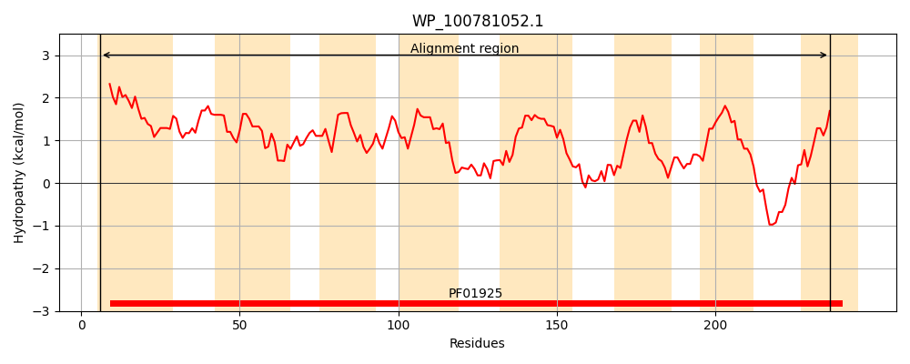
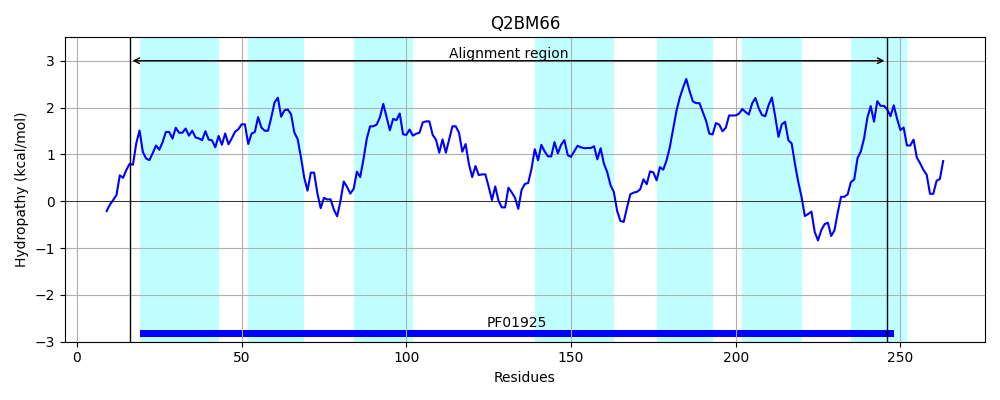
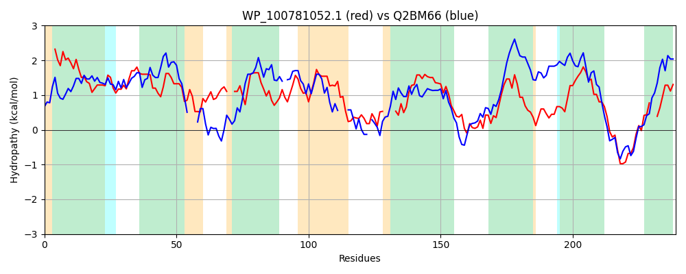

Hit Accession: Q2BM66
Hit TCID: 2.A.102.2.2
Hit Description: gnl|BL_ORD_ID|13196 gnl|TC-DB|Q2BM66|2.A.102.2.2 Putative uncharacterized protein OS=Neptuniibacter caesariensis GN=MED92_13216 PE=4 SV=1
Mach Len: 239
e:0.000000
Query TMS Count : 8
Hit TMS Count: 7
TMS-Overlap Score: 6.350000
Predicted Substrates:CHEBI:34987;sulfoacetic acid
BLAST Alignment:
Score: 157 , Bit scores: 65 bits, E-value: 1.6e-12, Alignment length: 239, Percentage identity: 29
Query: 6 IFYLLLIFIAAGLVKGVTGMGLPTVAMGLLGLLMPPQAAAALLVLPSLLTNLWQLLAGPALAQIVRRLWL--MMTGIIMGTLAGSSLLISLNPRCSALALGTVLIAYAGYALCGPALQVSARVEKWLSP----LMGGLTGVITGATGVFVIPAVPWLQTLGFRRDELVQALGLSFTLSTLAMAAGLSLHDGWHADSLLLSGLALLPALLGMWLGQWIRSRLSPRRFRQGF--LLFLLAL 236
I Y + + A +++ TG G A+ L LL PPQ + +++L L+ W + P Q R L + +G I+G G +LI + P +VL+ Y L ALQ S + + LSP +MG ++G IT A V P V +L R + L + F +ST+ + L L +LPAL G +LG + P+ FR +L LLAL
Sbjct: 16 IEYAIPLIFCASVIRAYTGFGFAAFAIIGLNLLWPPQVSVPVILLIDLICGCWLI---PQAIQHADRSLLKQLASGAIIGAPLGLLVLIWM-PELWIKVATSVLVLYMSINL---ALQHSKDL-RILSPVKNIIMGTVSGAITAAASVGGPPLVAYLTGCSLRPQQQRSVLIIFFAISTIFSLLLMGFTGLISTQVLYAVVLLILPALAGAYLGNRLFHFRQPKSFRPLVTPMLALLAL 246 | Protein Hydropathy Plots: |
|---|
|  |  |
Pairwise Alignment-Hydropathy Plot:
|
|---|
|  |